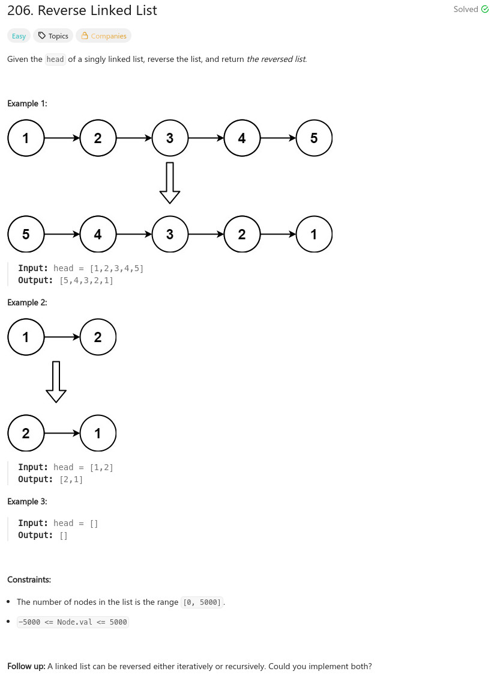

參考資訊：
https://www.cnblogs.com/cnoodle/p/11670754.html
題目：

/**
* Definition for singly-linked list.
* struct ListNode {
* int val;
* ListNode *next;
* ListNode() : val(0), next(nullptr) {}
* ListNode(int x) : val(x), next(nullptr) {}
* ListNode(int x, ListNode *next) : val(x), next(next) {}
* };
*/
class Solution {
public:
ListNode* reverseList(ListNode* head) {
if (!head || !head->next) {
return head;
}
ListNode *pre = NULL;
ListNode *next = NULL;
while (head) {
next = head->next;
head->next = pre;
pre = head;
head = next;
}
return pre;
}
};